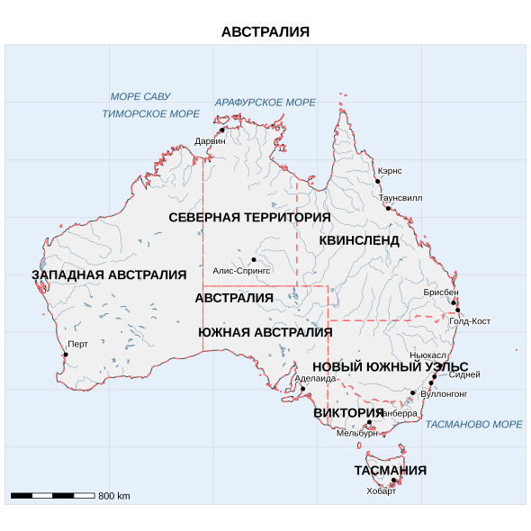

Linking to GEOS 3.13.1, GDAL 3.11.4, PROJ 9.7.0; sf_use_s2() is TRUE
Attaching package: 'dplyr'The following objects are masked from 'package:stats':
filter, lagThe following objects are masked from 'package:base':
intersect, setdiff, setequal, unionlibrary(ggplot2)
library(ggrepel)
library(ggspatial)
options(warn = 1)
root <- "D:/users/platt/shapefile/auxiliary/naturalearth/5.1.2"
countries <- ursa::spatial_read(file.path(root, "10m_cultural", "ne_10m_admin_0_countries.shp"))
rivers_aus <- ursa::spatial_read(file.path(root,"10m_physical", "ne_10m_rivers_australia.shp"))
lakes_aus <- ursa::spatial_read(file.path(root, "10m_physical", "ne_10m_lakes_australia.shp"))
cities <- ursa::spatial_read(file.path(root, "10m_cultural", "ne_10m_populated_places.shp"))
states <- ursa::spatial_read(file.path(root, "10m_cultural", "ne_10m_admin_1_states_provinces.shp"))
australia <- countries %>% filter(NAME == "Australia")
cities_aus <- cities %>% filter(ADM0NAME == "Australia")
states_aus <- states %>% filter(admin == "Australia")
target_cities <- c("Darwin", "Townsville", "Alice Springs", "Brisbane",
"Perth", "Adelaide", "Newcastle", "Sydney", "Melbourne",
"Canberra", "Hobart", "Cairns", "Gold Coast", "Wollongong")
major_cities <- cities_aus %>% filter(NAME %in% target_cities)
if(nrow(major_cities) < length(target_cities)) {
pattern <- paste(target_cities, collapse = "|")
major_cities <- cities_aus %>%
filter(grepl(pattern, NAME, ignore.case = TRUE))
}
city_names_ru <- c(
"Дарвин" = "Darwin", "Таунсвилл" = "Townsville", "Алис-Спрингс" = "Alice Springs",
"Брисбен" = "Brisbane", "Перт" = "Perth", "Аделаида" = "Adelaide",
"Ньюкасл" = "Newcastle", "Сидней" = "Sydney", "Мельбурн" = "Melbourne",
"Канберра" = "Canberra", "Хобарт" = "Hobart", "Кэрнс" = "Cairns",
"Голд-Кост" = "Gold Coast", "Вуллонгонг" = "Wollongong"
)
major_cities$name_ru <- names(city_names_ru)[match(major_cities$NAME, city_names_ru)]
state_labels <- data.frame(
name = c("СЕВЕРНАЯ ТЕРРИТОРИЯ", "КВИНСЛЕНД", "ЗАПАДНАЯ АВСТРАЛИЯ",
"ЮЖНАЯ АВСТРАЛИЯ", "НОВЫЙ ЮЖНЫЙ УЭЛЬС", "ВИКТОРИЯ",
"ТАСМАНИЯ", "АВСТРАЛИЯ"),
lon = c(133.5, 144.0, 120.0, 135.0, 147.0, 143.0, 147.0, 132.0),
lat = c(-20.0, -22.0, -25.0, -30.0, -33.0, -37.0, -42.0, -27.0)
) %>% st_as_sf(coords = c("lon", "lat"), crs = 4326)
sea_labels <- data.frame(
name = c("ТИМОРСКОЕ МОРЕ", "МОРЕ САВУ", "ТАСМАНОВО МОРЕ", "АРАФУРСКОЕ МОРЕ"),
lon = c(124.0, 123.0, 155.0, 135.0),
lat = c(-11.0, -9.5, -38.0, -10.0)
) %>% st_as_sf(coords = c("lon", "lat"), crs = 4326)
bbox <- st_bbox(c(xmin = 110, xmax = 160, ymin = -45, ymax = -5), crs = 4326)
sea_poly <- st_as_sfc(bbox) %>% st_sf()
map_final <- ggplot() +
geom_sf(data = sea_poly, fill = "#e6f0fa", color = NA) +
geom_vline(xintercept = seq(110, 160, 10), color = "#cccccc", linewidth = 0.2) +
geom_hline(yintercept = seq(-45, -5, 5), color = "#cccccc", linewidth = 0.2) +
annotate("text", x = seq(110, 160, 10), y = -4,
label = c("110° в.д.", "120° в.д.", "130° в.д.", "140° в.д.",
"150° в.д.", "160° в.д."),
size = 3, color = "#333333", bg.color = "white", bg.r = 0.1) +
annotate("text", x = 109, y = seq(-45, -5, 5),
label = c("45° ю.ш.", "40° ю.ш.", "35° ю.ш.", "30° ю.ш.", "25° ю.ш.",
"20° ю.ш.", "15° ю.ш.", "10° ю.ш.", "5° ю.ш."),
size = 3, color = "#333333", hjust = 1, bg.color = "white", bg.r = 0.1) +
geom_sf(data = australia, fill = "#f0f0f0", color = "#333333", linewidth = 0.4) +
geom_sf(data = states_aus, fill = NA, color = "#FF6B6B", linewidth = 0.6, linetype = "dashed") +
geom_sf(data = lakes_aus, fill = "#b0d0e0", color = "#4B7B9C", linewidth = 0.2) +
geom_sf(data = rivers_aus, color = "#4B7B9C", linewidth = 0.2, alpha = 0.8) +
geom_sf(data = major_cities, color = "#000000", size = 2, shape = 16) +
geom_text_repel(data = major_cities,
aes(label = name_ru, geometry = geometry),
stat = "sf_coordinates",
size = 3.5, box.padding = 0.5, point.padding = 0.3,
segment.color = "#999999", min.segment.length = 0.1,
max.overlaps = 20, bg.color = "white", bg.r = 0.15) +
geom_text(data = state_labels,
aes(label = name, geometry = geometry),
stat = "sf_coordinates",
size = 5, fontface = "bold", color = "#000000",
bg.color = "white", bg.r = 0.2) +
geom_text(data = sea_labels,
aes(label = name, geometry = geometry),
stat = "sf_coordinates",
size = 4, fontface = "italic", color = "#2A5F8A",
bg.color = "white", bg.r = 0.15) +
annotation_scale(location = "bl",
width_hint = 0.18,
height = unit(0.2, "cm"),
line_width = 1,
bar_cols = c("black", "white"),
text_col = "black",
text_cex = 0.9) +
coord_sf(xlim = c(110, 160), ylim = c(-45, -5), expand = FALSE) +
theme_minimal() +
theme(
panel.grid.major = element_blank(),
panel.grid.minor = element_blank(),
panel.background = element_rect(fill = "#e6f0fa", color = NA),
axis.text = element_blank(),
axis.title = element_blank(),
plot.title = element_text(hjust = 0.5, size = 16, face = "bold")
) +
labs(title = "АВСТРАЛИЯ")Warning in annotate("text", x = seq(110, 160, 10), y = -4, label = c("110° в.д.", : Ignoring unknown
parameters: `bg.colour` and `bg.r`Warning in annotate("text", x = 109, y = seq(-45, -5, 5), label = c("45° ю.ш.", : Ignoring unknown
parameters: `bg.colour` and `bg.r`Warning in geom_text(data = state_labels, aes(label = name, geometry = geometry), : Ignoring unknown
parameters: `bg.colour` and `bg.r`Warning in geom_text(data = sea_labels, aes(label = name, geometry = geometry), : Ignoring unknown
parameters: `bg.colour` and `bg.r`Warning in st_point_on_surface.sfc(sf::st_zm(x)): st_point_on_surface may not give correct results for
longitude/latitude data
Warning in st_point_on_surface.sfc(sf::st_zm(x)): st_point_on_surface may not give correct results for
longitude/latitude data
Warning in st_point_on_surface.sfc(sf::st_zm(x)): st_point_on_surface may not give correct results for
longitude/latitude dataScale on map varies by more than 10%, scale bar may be inaccurate
ggsave("australia_final_reproduced.png", map_final, width = 11, height = 9, dpi = 300, bg = "white")Warning in st_point_on_surface.sfc(sf::st_zm(x)): st_point_on_surface may not give correct results for
longitude/latitude data
Warning in st_point_on_surface.sfc(sf::st_zm(x)): st_point_on_surface may not give correct results for
longitude/latitude data
Warning in st_point_on_surface.sfc(sf::st_zm(x)): st_point_on_surface may not give correct results for
longitude/latitude dataScale on map varies by more than 10%, scale bar may be inaccurateWarning in st_point_on_surface.sfc(sf::st_zm(x)): st_point_on_surface may not give correct results for
longitude/latitude data
Warning in st_point_on_surface.sfc(sf::st_zm(x)): st_point_on_surface may not give correct results for
longitude/latitude data
Warning in st_point_on_surface.sfc(sf::st_zm(x)): st_point_on_surface may not give correct results for
longitude/latitude dataScale on map varies by more than 10%, scale bar may be inaccuratedevSVG
2